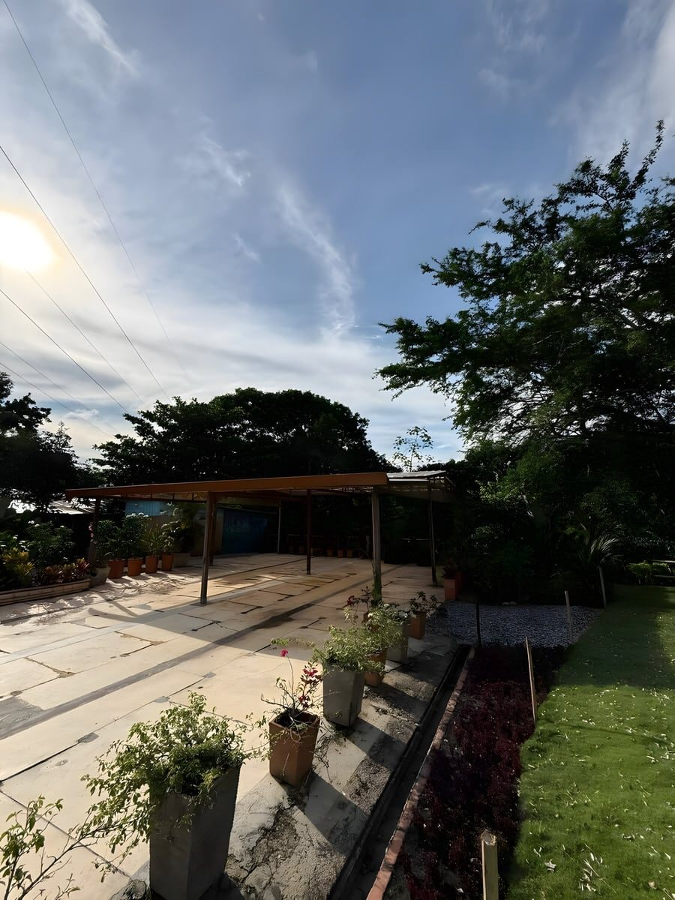
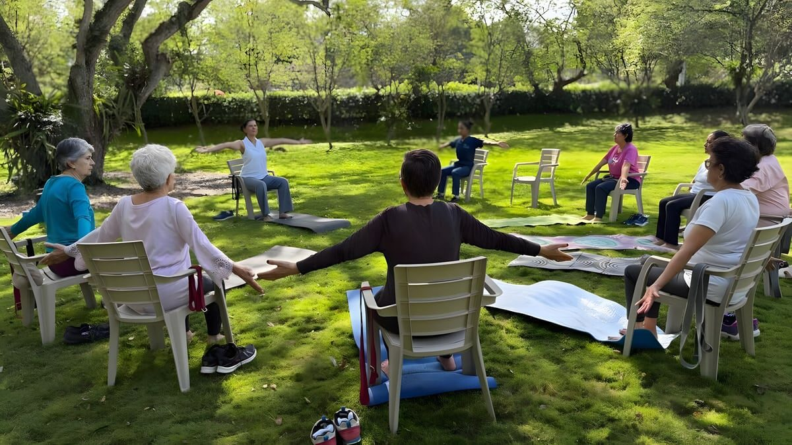
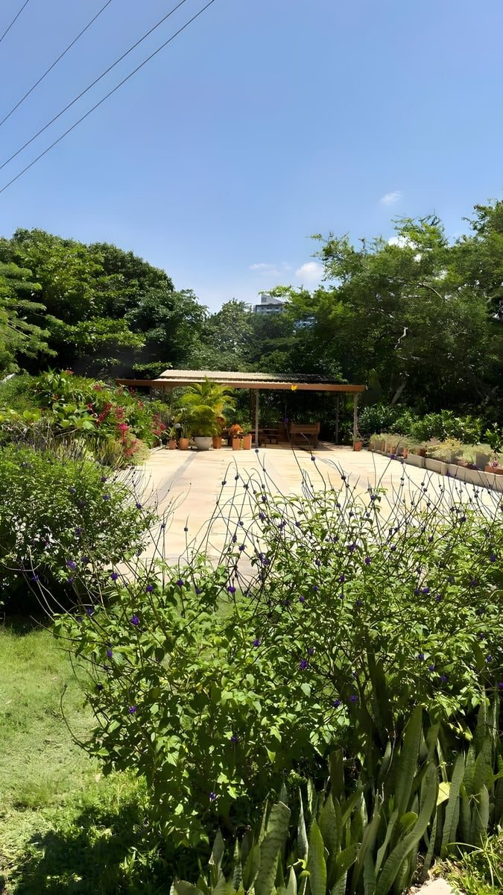
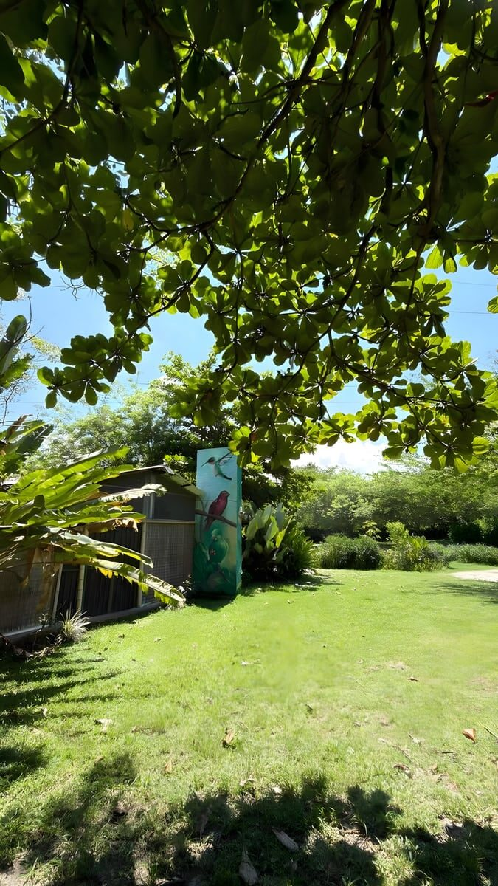
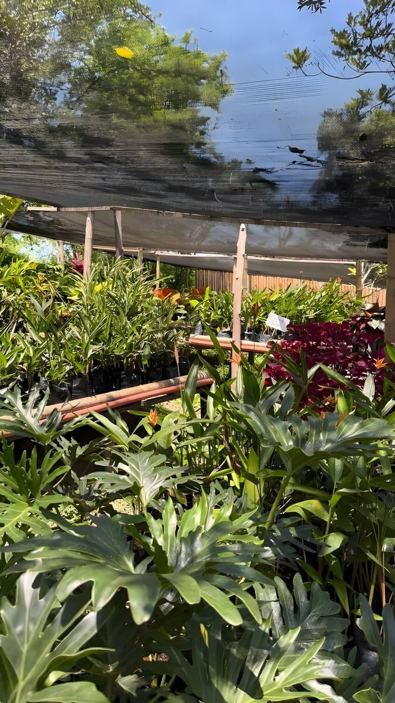

Que el altar sea un árbol
Bodas y matrimonios. Ceremonia al aire libre entre los árboles y recepción bajo carpa iluminada cuando cae la noche.

 Vegas del Verde
Vegas del Verde
Cuatro hectáreas de bosque a 10 minutos del Anillo Vial. Nosotros ponemos los árboles; el plan lo pones tú.


Fotografías del concurso del predio: Leyner Lozano, Jesus Lopez, Yeraldilsa Gamboa, Fabiola Rueda, Eritmoratto y Jonathan Layton Avila.
Nosotros
Cuatro hectáreas de bosque entre dos corrientes de agua, en pleno Área Metropolitana de Bucaramanga.
Vegas del Verde es un terreno arbolado de 4 hectáreas rodeado por la quebrada Aranzoque y el riachuelo La Florida.
Estás en el corazón del Área Metropolitana de Bucaramanga y no se nota: aquí el ruido de fondo lo ponen los pájaros. Un refugio que da tranquilidad y seguridad en medio del bullicio urbano.
Nosotros ponemos las cuatro hectáreas. El plan lo pones tú.
Vereda Río Frío, Floridablanca · Santander, Colombia.
Ver quién más vive aquí


Nuestro compromiso
Creemos en el poder de la conexión y el aprendizaje conjunto. Por eso abrimos estos espacios a actividades que promuevan el bienestar físico, mental y emocional.

Educación ambiental y conciencia social: talleres educativos y de jardinería, avistamiento de aves y mariposas, y el Sendero Ecovital para ver de cerca las plantas del lugar.

Relaciones sanas y respetuosas: reuniones familiares, sociales y corporativas, mindfulness y talleres para el manejo de las emociones, en espacios pensados para el encuentro.

Respeto por la naturaleza y por los demás: aquí conviven 101 especies de aves y 347 de plantas. El plan pasa; el bosque se queda.
 101
Especies de aves registradas
101
Especies de aves registradas
 347
Especies de plantas
347
Especies de plantas
 4
Hectáreas de bosque
4
Hectáreas de bosque
 20
Familias botánicas
20
Familias botánicas
Abierto de lunes a domingo, de 6:00 a. m. a 10:00 p. m. Cómo llegar
Alquiler de espacios
Dentro de las cuatro hectáreas arboladas hay cinco escenarios que se alquilan por separado. No cambian de tamaño nada más: cambian lo que puedes hacer en ellos. Un prado abierto, un claro a la sombra, un campo plano, un taller bajo techo.

El prado más ancho del predio: césped parejo, sin una sola pared, cerrado a lo lejos por una hilera de árboles y un seto vivo. Cabe el aforo completo bajo cielo abierto y todavía queda sombra en los bordes.
Quiero este plan en la Alameda
Una vega llana de césped abierto, con un árbol grande dando sombra a un costado y la arboleda cerrando el fondo. Terreno parejo, sin desniveles, para montar el plan a tu manera.
Reserva tu escape en La Vega
Un claro a los pies de un árbol enorme: el césped hace de platea y la copa hace de techo. Para cuentos, charlas, presentaciones y talleres en círculo, con la sombra puesta desde el primer minuto.
Atrévete a un plan distinto en el Teatrino
El único espacio bajo techo: cubierta de caña, paredes en estera y una guirnalda de bombillos de lado a lado. Piso firme y mesas para pintar, exponer o trabajar en grupo aunque el cielo se abra.
Vengo con mi curso al Taller
El campo más plano y ancho, con el guadual cerrando el fondo y sombra suficiente en el borde para quien sólo viene a mirar. Para partidos, juegos y actividad física en grupo.
Quiero este plan en la CanchaMismo trato para los cinco: bloques de cuatro horas, con sillas y mesas incluidas.
Ver condiciones de alquilerCelebraciones y eventos
Cuatro hectáreas arboladas para casarte, cumplir años, sacar al equipo de la oficina o traer al curso entero. A diez minutos del Anillo Vial, y a un mundo de distancia.
Sillas y mesas Rimax incluidas; el sonido lo llevas tú. Comida y catering externo permitidos para eventos.
Bodas y matrimonios. Ceremonia al aire libre entre los árboles y recepción bajo carpa iluminada cuando cae la noche.
Cumpleaños y recreación infantil. Desde un picnic decorado sobre el prado hasta una fiesta de noche bajo carpa, con espacio de sobra para correr.
Integraciones, lanzamientos y reuniones de empresa sobre el césped, con wifi, baños, parqueadero y vigilancia privada.
Bienestar
Creemos en el poder de la conexión y el aprendizaje conjunto. Abrimos los espacios del parque a las prácticas que cuidan el cuerpo, la mente y las emociones: siempre afuera, siempre a la sombra.
Wifi, baños, vigilancia privada y parqueadero para todos los grupos. Abrimos de lunes a domingo, de 6:00 a. m. a 10:00 p. m.
Reserva tu escapeEncuentros y cultura
Aprender juntos, celebrar juntos y cuidar lo que nos rodea: educación ambiental y conciencia social, relaciones sanas y respetuosas, respeto por la naturaleza y por los demás.
Cuéntanos qué quieres celebrar o aprender y armamos el plan a tu medida.
Atrévete a un plan distintoAl fondo, cuatro aves fotografiadas dentro del predio para el concurso de fotografía de aves de Vegas del Verde, por Arturo sepulveda, Jesus Lopez, Fabio Hernandez y JaimeSuarez. Ver la galería completa
Colegios y grupos educativos
Siete espacios para que un curso entero pase el día afuera: escenario, taller, observación de aves y de plantas, polinizadores, sendero y vivero. Educación ambiental con las manos en la tierra, a diez minutos del Anillo Vial.
Escenario al aire libre para 70 personas: obras, cuenteros, presentaciones de proyecto y actos de bienvenida.
Zona techada para 45 personas, con sillas y mesas Rimax incluidas. Jardinería, pintura al aire libre y trabajo en grupo bajo sombra.
Pajareo dentro del predio, donde se han registrado 101 especies de aves, entre ellas la Chachalaca Colombiana, endémica del país.
Ver las aves del predio347 especies de plantas y 20 familias botánicas para reconocer en campo, con árboles de conservación como el Cedro y el Guayacán Amarillo.
Avistamiento de mariposas y observación del trabajo de los polinizadores sobre las floraciones del parque.
Recorrido guiado bordeado por guaduas, Búcaro y Caracolí, que sigue la quebrada Aranzoque hasta su encuentro con el riachuelo La Florida. Entrada de $15.000 por persona.
Ver el senderoProducción y venta de plantas y espacio de aprendizaje: siembra, abonos y cuidado. Registro ICA, resolución n.º 00000819 del 03/02/2025.
Ver el viveroEl alquiler base es de cuatro horas, con opción de una hora adicional, e incluye sillas y mesas Rimax; el sonido lo lleva el colegio. Armamos la ruta según el grado y el número de estudiantes.
Sendero Ecovital
Cuatro hectáreas arboladas entre la quebrada Aranzoque y el riachuelo La Florida, a diez minutos del Anillo Vial y a un mundo de distancia. Se recorren despacio, con guía, mirando hacia arriba.


El sendero es para pajarear —avistamiento de aves— y para observar de cerca las plantas del lugar. Está bordeado por guaduas, Búcaro y Caracolí, y sigue la quebrada Aranzoque hasta su encuentro con el riachuelo La Florida.
Quebrada Aranzoque Riachuelo La Florida
Entrada al Sendero Ecovital
$15.000 COP
por persona
Reservas por WhatsApp al 316 675 8362. Abierto de lunes a domingo, de 6:00 a.m. a 10:00 p.m.
Pajareo · Birdwatching
El predio es un punto de aviturismo dentro del Área Metropolitana de Bucaramanga. Entre las 101 especies registradas hay una endémica de Colombia y siete migratorias boreales.

Endémica de Colombia
Ortalis columbiana
Endémica quiere decir que no vive de forma natural en ningún otro país del mundo. Es la especie más singular del registro de Vegas del Verde.
En la foto está su bosque, no ella: ninguna de las 57 fotografías del concurso la alcanzó todavía. Ese es justamente el plan.
7
Especies migratorias boreales
Siete de las 101 son migratorias boreales: aves que bajan desde el norte del continente y encuentran refugio en estas cuatro hectáreas. Están de paso, y hay que salir a buscarlas cuando llegan.
Concurso de fotografía
Las hicieron veinte fotógrafos de la comunidad, cámara en mano, dentro del predio. Cada imagen conserva el nombre de quien la tomó.
57 Fotografías · 20 autores
Las fotografías son de sus autores y se publican con crédito. El recorrido de avistamiento se reserva por WhatsApp.
Inventario del predio
347 especies de plantas de 20 familias botánicas, 18 de anfibios, 23 de reptiles y 3 de mamíferos, registradas dentro de las cuatro hectáreas. Cada ambiente del predio tiene sus inquilinos.
El jardín
347
Especies de plantas · 20 familias botánicas
Bromelias, heliconias y árboles grandes conviviendo en el mismo camino.

La sombra del follaje
18
Especies de anfibios
Donde no da el sol directo y la hojarasca guarda humedad.
La piedra al sol
23
Especies de reptiles
Piedra caliente, cactus y bordes secos: su sitio favorito.
El dosel
3
Especies de mamíferos
Arriba, entre las ramas grandes, lejos del camino.
Las fotografías muestran los ambientes del predio, no las especies: las cifras vienen del inventario biológico del lugar.
Vivero
Espacio de producción y venta de plantas, y espacio de aprendizaje que apoya los talleres de conexión con la naturaleza.


Los clientes pueden adquirir complementos para decorar con plantas sus hogares, oficinas o eventos.
Cómo llegar
Estamos en la vereda Río Frío de Floridablanca, a 10,2 km de Bucaramanga y 10,3 km de Girón: cuatro hectáreas arboladas entre la quebrada Aranzoque y el riachuelo La Florida, en pleno Área Metropolitana. Se sale de la ciudad sin salir de ella.

Coordenadas 7.0574425, -73.1144128
El predio cuenta con parqueadero propio y vigilancia privada.
Si te suena alguno de estos sitios, ya sabes llegar.
Pegados a la ciudad y en la puerta del Santander que se visita. Distancias aproximadas.
Reservas y contacto
Las reservas y cotizaciones se atienden por WhatsApp. Escríbenos y te respondemos con disponibilidad, condiciones y todo lo que necesites saber antes de venir.